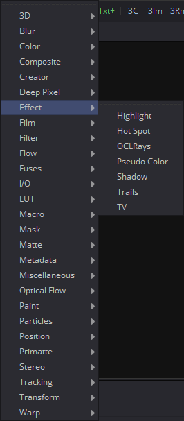
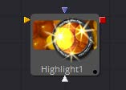
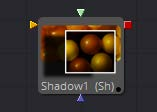
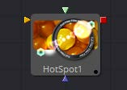
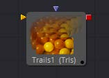
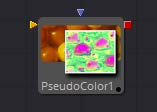
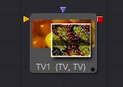

第十章 Effect Tools 效果工具
|  |  |  |
|  |  | |
|  |  |
Highlight [Hil]
Highlight滤镜在图像的明亮区域中创建星形高光，类似于镜头星形滤镜效果。
Settings Tab 设置选项卡

Low and High 低和高
此范围控件指定图像中会产生高光的亮度值范围。小于Low值的值将不会高光显示。高于High值的值将获得完整的高光显示效果。
Curve 曲线
曲线值会更改高光显示长度上的下降。较高的值将使耀斑的亮度在高光中心附近下降，而较低的值将从中心进一步下降。
Length 长度
这指定的高光发出耀斑的长度。
Number of Points 点的数量
这确定了从高光发出耀斑的数量。
Angle 角度
使用此控件旋转高光。
Merge Over 合并
选中此复选框后，它将在原始图像上叠加效果。取消选中此复选框，输出有高光。这对于高光的下游颜色校正有帮助。
Color Scale Tab 颜色缩放选项卡

Red, Green and Blue Scale Red、Green和Blue缩放
向下移动一个或所有这些通道的滑块将改变高光的衰减颜色。
Alpha Scale Alpha缩放
向下移动Alpha滑块将使高光衰减更透明。
Highlight Masks 高光遮罩
Highlight工具提供了额外的遮罩输入，称为高光遮罩。这是一个预遮罩，用于确定在应用高光之前可以受高光影响的像素。与常规遮罩不同，当高光超出遮罩边缘时，它将不会从源像素中裁剪掉高光。
Hot Spot [Hot]
Hot Spot工具用于创建各种类型的镜头光晕、聚光灯和燃烧/减淡效果。
在现实世界中，当场景中由于反射而出现的极亮光源被相机镜头内部的元件反射时，就会发生镜头光晕。当通过摄像机镜头观察强光源时，例如太阳或明亮的恒星，可能会在镜头中看到镜头光晕。
Hot Spot Tab 热点选项卡

Primary Center X and Y 基础中心X和Y
这是场景中基础热点的位置。次要镜头元素和反射相对于基础的位置定位。
Primary Strength 基础强度
此控件确定主要热点的亮度。
热点 Size 热点尺寸
该控件确定主要热点的直径。值1.0代表拥有整个图像宽度的圆。
Aspect 宽高比
这控制了spot的宽高比。值为1.0会产生一个完美的圆形热点。大于1.0的值将水平拉长圆，小于1.0的值将垂直拉长圆。
Aspect Angle 宽高比角度
此控件可用于旋转主要热点。
Secondary Strength 次要强度
该控件确定次要热点的强度，即亮度。次要热点是主要热点的反射。它始终位于与主要热点相对的图像的另一侧。
Secondary Size 次要尺寸
这确定了次要热点的大小。
Apply Mode 应用模式
此控件确定热点如何影响基础图像。
Add (Burn) 加（燃烧）
这会使创建的斑点使图像变亮。
Subtract (Dodge) 减（减淡）
这会使创建的斑点使图像变暗。
Multiply (Spotlight) 乘（聚光灯）
这会导致产生的斑点使光线的一部分图像分离，并使其余部分变暗。
Occlude 遮挡
使用此按钮组可以选择与热点工具的Occlusion输入相连的图像通道，以提供遮挡遮罩。
热点的源被它和摄像机之间有物体阻挡时，就会发生遮挡。当热点的源被遮挡时，热点就会闪出。
遮挡可以通过与工具块上的Occlusion输入相连的任何图像的Alpha或R、G或B通道进行控制。图像中的白色像素将遮挡热点。灰色像素将部分抑制热点。
Lens Aberration 镜头像差
像差会更改主要和次要热点的形状和行为。
In and Out Modes 入和出模式
将热点的形状拉长成眩光。在In模式下，热点向图像的中心延伸，而在Out模式下，热点向角落延伸。
Flare In and Flare Out Modes 光晕入和光晕出模式
此选项是由镜头效果的移动控制的镜头失真效果。Flare In将使热点越靠近中心效果变得越明显。而Flare Out将使热点越靠近图像边缘效果变得越明显。
Lens 镜头
此模式模拟圆形、环形镜头效果。
Aberration 像差
Aberration滑块控制镜头像差效果的整体强度。
Color Tab 色彩选项卡

Color Channel and Mix 色彩通道和混合
选中后，这些复选框控件将允许在下面的LUT中编辑所选的样条线。
Red, Green, Blue and Alpha Splines Red、Green、Blue和Alpha样条
Red、Green、Blue和Alpha样条用于沿热点半径调整聚光灯的颜色。
垂直轴表示颜色通道的强度或强度，从底部的0值到顶部的1值。 水平轴表示沿热点半径的位置，从左侧的外部边缘到右侧的内部。
因此，该工具的默认曲线表示Red、Green、Blue和Alpha从曲线的外部边缘到内部边缘都具有线性衰减。
Mix Spline 混合样条
Mix样条用于确定Radial选项卡沿热点半径具有的控件的影响。横轴代表沿圆周的位置，0为0度，1.0为360度。垂直轴表示要与颜色热点混合的径向热点的数量。值为0表示所有径向热点，而值为1.0表示所有色彩热点。
注意： 在LUT中单击鼠标右键将显示一个上下文菜单，其中包含与修改样条曲线有关的选项。
LUT编辑器控件和选项的完整说明可在本手册的工具控件（Tool Controls）一章中找到。
Radial Tab 径向选项卡

Radial On 径向开
选中后，此控件将启用Radial样条。否则，由样条创建的径向遮罩将不会应用到热点，并且颜色控件中的Mix样条线将不会对热点产生影响。
Radial Length and Radial Density 径向长度和径向密度样条
这些样条曲线的关键是认识到LUT编辑器的水平轴代表围绕热点圆周的位置。值0.0是0度，而1.0是360度。根据这一点，长度决定了沿圆周构成热点的光的半径，而密度表示沿圆周的光的亮度。
Radial Repeat 径向重复
此控件将重复径向样条的效果X倍。例如，重复为2.0将使样条在0和180度之间生效，而不是在0和360度之间生效，并在180和360之间再次重复样条曲线。
Length Angle 长度角度
此控件将围绕热点的圆周旋转Radial Length样条曲线的效果。
Density Angle 密度角度
此控件将围绕热点的圆周旋转Radial Density样条曲线的效果。
注意： 在样条曲线区域中单击鼠标右键将显示一个上下文菜单，其中包含与修改样条曲线相关的选项。
LUT编辑器控件和选项的完整说明可在本手册的工具控件（Tool Controls）一章中找到。
L1, L2 and L3 Tab L1、L2和L3选项卡


Lens Reflect 1-3 镜头光晕1-3
选中后，将启用由元素引起的反射。
Element Strength 元素强度
这确定了元素反射的亮度。
Element Size 元素尺寸
这确定了元素反射的大小。
Element Position 元素位置
这确定了元素反射与轴的距离。将该轴计算为热点位置和图像中心之间的线。
Element Type 元素类型
使用此按钮组选择元素反射的形状和密度。可用的预设如下所述。
- Circular 圆形： 这会产生稍微软边的圆形反射。
- Soft Circular 软圆形： 这会产生非常软边的圆形反射。
- Circle 圆： 这将创建一个硬边的圆形。
- NGon Solid NGon实心： 这将创建具有可变边数的填充多边形。
- NGon Star NGon星形： 这将创建一个非常软边的星形，其边数可变。
- NGon Shaded Out NGon着色出： 这将创建软边圆形形状。
- NGon Shaded In NGon着色入： 这将创建一个边数可变的多边形，该多边形具有非常柔软的反向（暗中心，亮半径）圆。
NGon Angle NGon角度
此控件用于确定NGon形状的角度。
NGon Sides NGon边数
此控件用于确定将Element Type设置为Ngon Star、Ngon Shaded Ou和Ngon Shaded In时使用的边数。
NGon Starriness NGon星度
此控件用于将多边形弯曲为星形。值越高，形状越星形。
Lens Color Controls 镜头色彩控制
这些控件确定影响反射颜色的镜头颜色。要选择一种镜头颜色，请从显示的图像中选择一种，或者使用滑块或输入框输入RGBA值。
Pseudo Color [PsCl]
Pseudo Color工具提供了根据该工具的控件生成的波形产生颜色变化的功能。它可以产生原始图像的静态或动画变化。该工具的控件分为四个相同的标签，每个颜色通道一个。
R/G/B/A Tabs R/G/B/A选项卡

Color Check Box 色彩复选框
选中后，Pseudo Color工具将影响此色彩通道。
Wrap 交换
选中后，超过允许参数值的波形值将被交换到相反的极端。
High and Low 高和低
High and Low用于确定工具在特定色彩通道中的影响范围。
Soft Edge 柔边
此滑块确定颜色过渡的柔和边缘。
Waveform 波形
这将选择发生器要创建的波形类型。有四种波形可用：正弦波（Sine），三角波（Triangle），锯齿波（Sawtooth ）和方波（Square）。
Frequency 频率
这将控制选定波形的频率。较高的值将增加出现方差的次数。
Phase 相位
这将修改波形的相位。为此控件加入动画将产生颜色循环效果。
Mean 均值
这将确定所选波形的电平或平均值。较高的值将增加通道的整体亮度，直到达到允许的最大值。
Amplitude 振幅
幅度增加或减少波形的总功率。
Shadow [Sh]
Shadow是一种多用途工具，可用于创建基于图像的Alpha通道信息的阴影。也可以使用其他图像来控制阴影的表面深度。
Shadow工具被设计来投射简单的2D阴影。使用Spotlight工具和Image Plane工具进行完整3D阴影投射。
Controls 控件

Shadow Offset 阴影偏移
此控件设置阴影对象与背景之间的视距。调整阴影偏移十字准线在视图中的位置是创建简单阴影的最快方法。
Softness 柔度
Softness控制阴影边缘的模糊程度。背景离物体越远，它变得越模糊。
Shadow Color 阴影颜色
使用此控件选择阴影的颜色。最逼真的阴影通常是不完全黑色和锋利的阴影。
Light Position 光源位置
此控件设置灯光相对于阴影投射对象的位置。仅当Light Distance滑块未设置为无穷大（1.0）时，才考虑Light Position。
Light Distance 光源距离
此滑块将改变无穷大（1.0）和与阴影投射对象的零距离之间的表面距离。设置Light Distance的好处是，生成的阴影看起来更逼真，阴影的其他部分比附近的部分更长。
Minimum Depth Map Light Distance 最小深度贴图光距离
此控件当图像连接到阴影的Depth Map输入时处于活动状态。滑块用于控制深度图对光距离的贡献量。深度贴图的黑暗区域使阴影更深。白色区域使其更接近相机。
Z Map Channel Z贴图通道
此菜单用于选择连接到该工具的Z Map输入的图像的哪个颜色通道来创建阴影深度图。可以在RGB和A、Luminance和Z缓冲通道中选择。
Output 输出
输出图像可以包含已应用阴影的图像，也可以仅包含阴影。
更改输出下拉列表中的设置可控制将使用哪种模式。当需要将色彩校正、透视或其他效果应用到生成的阴影与对象合并回之前，此方法会有帮助。
例如，使用Shadow Alpha控制阴影的透明度。
Trails [Trls]
Trails工具用于创建图像中重影般的尾迹。当它应用在带有alpha通道的运动图像时，这会产生有趣的效果。与Directional Blur不同，只有图像之前的运动才会显示为效果的一部分。
Controls 控件

Restart 重新开始
此控件清除图像缓冲区并显示干净的帧，不含任何重影效果。
Preroll 预滚
这将使Trails工具根据滑块上的帧数预渲染效果。这将使Trails工具根据滑块上的帧数预渲染效果。
Reset/Pre-Roll on Render 渲染时重新开始/预滚
启用此复选框后，Trails工具将在启动预览或最终渲染时重置自身。它将预滚指定的帧数。
This Time Only 仅当前时间
选中此复选框将使预滚仅使用当前帧，而不使用先前帧。
Number of Pre-roll Frames 预滚帧数
这确定了要预滚动的帧数。
Lock RGBA 锁定RGBA
如果取消选中此复选框，则可以独立控制颜色通道的Gain。这样就可以给Trails效果上色。
Lock Scale X/Y 锁定缩放X/Y
如果取消选中此复选框，则可以为每个轴分别操纵图像缓冲区的X轴和Y轴缩放比例。
Lock Blur X/Y 锁定模糊X/Y
如果取消选中此复选框，则可以为每个轴分别控制图像缓冲区的模糊。
Gain 增益
Gain控件会影响缓冲区中图像的整体强度和亮度。此参数的较低值将创建更短、更暗淡的轨迹，而较高的值将创建更长、更实心的轨迹。
Rotate 旋转
在当前帧合并到效果之前，Rotate控件会旋转缓冲区中的图像。
Offset X/Y 偏移X/Y
在当前帧合并到效果之前，这些控件会偏移缓冲区中的图像。它们分别对每个轴进行控制。
Scale 缩放
在将当前帧合并到效果之前，Scale控件将调整缓冲区中图像的大小。
Blur Size 模糊尺寸
在将当前帧合并到效果之前，Blur Size控件将模糊应用于缓冲区中的图像。
Apply Mode 应用模式
此菜单用于确定将一个样本合并到另一个样本时Trails工具使用的方法。本菜单中合成工具（Composite Tools）一章Merge工具的文档中更完整地介绍了此菜单中的方法。
Operator Mode 运算器模式
此菜单用于选择确定前景和背景如何组合以产生结果。菜单仅在工具的Apply模式设置为Normal时会显示。
有关Operation模式的基础数学的精彩描述，请参阅《合成数字图像》（ Compositing Digital Images ），Porter, T和T. Duff，SIGGRAPH 84 proceedings，第253-259页。 基本上，数学上会如下所述。请注意，通过交换前景和背景输入（使用Command-T或Ctrl-T）并选择相应的模式，可以轻松获得运算器下拉列表中未列出的某些模式（Under、In、Held In、Below）。
用于组合合并中的像素总是
fg * x + bg * y
。不同的操作确定
x
和
y
是什么，如每种模式的描述中所示。
-
Over： Over模式通过将FG的alpha通道大于1的位置中的像素替换为BG中的像素，将FG图层添加到BG图层。
x = 1, y = 1-[foreground alpha] -
In： In模式将BG输入的alpha通道与FG中的像素相乘。FG输入的颜色通道将被忽略。在最终输出中只能看到来自FG的像素。这实质上是使用BG中的遮罩剪裁FG。
x = [background alpha], y = 0 -
Held Out： Held Out基本上与In操作相反。FG图像中的像素与BG图像的反转α通道相乘。使用In操作和Matte Control工具完成相同的结果，以反转BG图像的遮罩通道。
x = 1-[background alpha], y = 0 -
ATop： ATop仅在BG具有遮罩的情况下将FG放置在BG上。
x = [background alpha], y = 1-[foreground alpha] -
XOr： 当FG或BG有遮罩时，XOr将FG与BG结合在一起，但不会两者都没有遮罩。
x = 1-[background alpha], y = 1-[foreground alpha]
Subtractive/Additive, Alpha Gain, Burn In 减性/加性、Alpha增益和烧入
有关这些控件及其效果的详细信息，请参阅合成工具（Composite Tools）一章中Merge工具的文档。
Merge Under 合并下方
这会将当前图像合并到生成的拖影下，而不是通常的上方操作。
TV [TV]
TV工具是设计来模仿模拟电视广播和屏幕中出现的一些典型缺陷的一种简单工具。
Controls 控件

Scan Lines 扫描线
此滑块用于通过从图像下降线条来模拟隔行的外观。将其设置为带透明Alpha的黑色会下降线条。值为1（默认）将每二行下降一次。值为2表示每一行，然后下降第二和第三行并如此重复。值为零将关闭效果。
Horizontal 水平
使用此滑块可以对图像应用简单的水平偏移。
Vertical 垂直
使用此滑块可以对图像应用简单的垂直偏移。
Skew 偏斜
该滑块用于对图像应用对角线偏移。正值会将图像偏斜到左上方。负值会使图像偏斜到右上方。像素将脱离帧环绕并重新出现在图像的另一侧。
Amplitude 幅度
Amplitude滑块可用于将平滑的正弦波型变形引入图像的边缘。较高的值将增加变形的强度。使用Frequency来确定重复失真的频率。
Frequency 频率
Frequency滑块在Amplitude控件大于1时设置沿图像边缘产生失真的正弦波频率。
Offset 偏移
使用Offset调整正弦波的位置，来让Amplitude和Frequency控件应用于图像的变形在整个图像中都能看到。
Noise Tab 噪声选项卡

Power 强度
将此滑块的值增加到大于0会在图像中引入噪声。值越高，噪声越强。
Size 尺寸
使用此滑块可将噪声贴图缩放更大。
Random 随机
如果此拨轮控件设置为0，则噪声图将是静态的。随时间更改该值会导致静态在帧之间变化。
Roll Bar Tab 滚动条形选项卡

Bar Strength 条形强度
默认值为0时，不会绘制任何条形图。值越高，条形覆盖的区域将越暗。
Bar Size 条形尺寸
增加此滑块的值以使条形更高。
Bar Offset 条形偏移
设置此控件的动画以在屏幕上滚动条形。